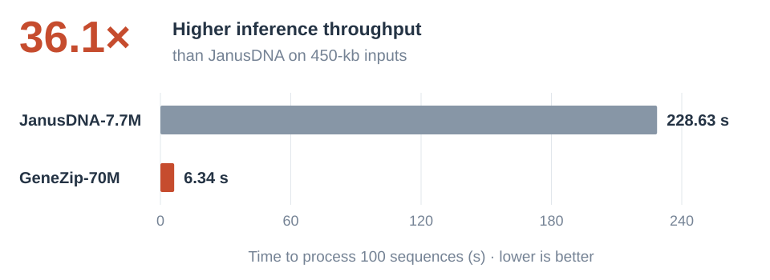

Dynamic routing
Predict chunk boundaries from DNA sequence, so chunk lengths can vary along the genome.
NeurIPS 2026
1Mila – Québec AI Institute2Université de Montréal3University of Ottawa
4National Research Council of Canada5HEC Montréal
01 / Motivation
DNA has uneven functional information density and extensive redundancy. Unlike uniform downsampling, GeneZip learns region-aware compression, allocating more tokens to user-specified regions such as promoters and genic regions.

02 / Method
GeneZip builds on H-Net's dynamic routing to turn raw DNA into a shorter sequence of latent tokens. Regional targets guide where resolution is retained, while bounded routing keeps token counts within a tractable range.

Predict chunk boundaries from DNA sequence, so chunk lengths can vary along the genome.
Training objective
Use gene-structure annotations to train the router toward regional compression targets, preserving finer resolution in promoters and genic regions under the default prior.
Routing constraint
Keep allocated token counts within configurable bounds to prevent too many or too few tokens during training, helping stabilize optimization.
Lower target ratios preserve finer resolution. Higher ratios allocate fewer tokens per base.
Training targets
Target-based illustration · not measured routing
Each prior represents a separately pretrained model; the animation illustrates target allocation.
03 / Compression Analysis
Trained on human DNA with GENCODE gene annotations, GeneZip achieves 137.6 base pairs per token, yet increases validation perplexity by only 0.31 over uncompressed Mamba2—the smallest reconstruction penalty among these high-compression models.
137.6 BPT
Base pairs per token
GeneZip-70M · pretraining validation
+0.31 PPL
Validation perplexity increase
vs. uncompressed Mamba2-84M
| Model | BPT | Overall PPL ↓ | ΔPPL ↓ |
|---|---|---|---|
| Mamba2-84M (uncompressed) | 1.0 | 2.4135 | — |
| U-Net-70M | 128.0 | 2.8414 | +0.4279 |
| H-Net-70M | 122.2 | 2.7930 | +0.3795 |
| GeneZip-70M | 137.6 | 2.7259 | +0.3124 |
ΔPPL is relative to uncompressed Mamba2. Bold marks the best values among the three high-compression models.
GeneZip retains finer resolution in promoter and genic regions on unseen human and mouse DNA, without annotations at inference.

GeneZip shows emergent Redundancy-aware compression. Repeats are a major source of DNA redundancy, yet GeneZip learns to compress them more strongly than surrounding DNA using only gene-structure supervision. This behavior emerges without repeat labels or a repeat-specific objective, covers both transposable-element-derived and tandem repeats, and transfers to nine species without further training.

GeneZip compresses repeats more strongly than H-Net across human and mouse, with comparable repeat perplexity.

04 / Downstream performance

3.13 average rank
GeneZip achieves the best average rank among models with leakage-controlled pretraining across four DNALongBench tasks, despite compressing DNA by 137.6×.
| Model | BPT | Inference (s) ↓ | CMP SCC ↑ | eQTL AUROC ↑ | ETGP AUPRC ↑ | TISP PCC ↑ | Avg. rank ↓ |
|---|---|---|---|---|---|---|---|
| Mamba2-84M | 1.0 | 40.80 | 0.111 | 0.762 | 0.322 | 0.294 | 6.25 |
| U-Net-70M | 127.99 | 4.85 | 0.131 | 0.807 | 0.390 | 0.178 | 4.00 |
| H-Net-70M | 122.19 | 11.78 | 0.118 | 0.791 | 0.225 | 0.303 | 5.75 |
| GeneZip-70M | 137.59 | 6.34 | 0.133 | 0.817 | 0.375 | 0.336 | 3.13 |
| Model | BPT | Inference (s) ↓ | CMP SCC ↑ | eQTL AUROC ↑ | ETGP AUPRC ↑ | TISP PCC ↑ | Avg. rank ↓ |
|---|---|---|---|---|---|---|---|
| DNALongBench-official | |||||||
| HyenaDNA-6.6M | 1.0 | 22.86 | 0.115 | 0.514 | 0.249 | 0.132 | 8.00 |
| Caduceus-Ph-7.7M | 1.0 | 35.06 | 0.133 | 0.566 | 0.380 | 0.109 | 5.63 |
| Caduceus-PS-7.7M | 1.0 | 68.36 | 0.127 | 0.538 | 0.376 | 0.108 | 7.00 |
| External pretraining | |||||||
| JanusDNA-7.7M | 1.0 | 228.63 | 0.159 | 0.840 | 0.438 | 0.002 | 3.25 |
| NTv3-100M-pre | 127.99 | 13.27 | 0.136 | 0.792 | 0.440 | 0.194 | 2.75 |
| Evo2-1B | 1.0 | OOM | 0.018 | 0.754 | 0.095 | -0.002 | 9.25 |
| Leakage-controlled pretraining | |||||||
| Mamba2-84M | 1.0 | 40.80 | 0.111 | 0.762 | 0.322 | 0.294 | 6.25 |
| U-Net-70M | 127.99 | 4.85 | 0.131 | 0.807 | 0.390 | 0.178 | 4.00 |
| H-Net-70M | 122.19 | 11.78 | 0.118 | 0.791 | 0.225 | 0.303 | 5.75 |
| GeneZip-70M | 137.59 | 6.34 | 0.133 | 0.817 | 0.375 | 0.336 | 3.13 |
Average rank uses all 10 models across the four tasks; lower is better. Bold marks the best results within leakage-controlled pretraining. Inference: 100 × 450-kb sequences on one H100, with model-specific batch sizes; OOM = out of memory. JanusDNA BPT reflects its published single-nucleotide representation.
Held-out test scores; all y-axes are truncated.
Different downstream tasks have different biological focuses. For example, in TISP, the promoter-focused priors Default (Promoter+Genic) and PromoterDistal both perform well. GeneZip lets users choose regional pretraining targets to match the biological focus of their downstream task.
@inproceedings{zhao2026genezip,
title = {GeneZip: Region-Aware Compression for Long-Context DNA Modeling},
author = {Zhao, Jianan and Liu, Xixian and Zhan, Zhihao and Yuan, Xinyu and Guo, Hongyu and Tang, Jian},
booktitle = {Advances in Neural Information Processing Systems},
year = {2026}
}